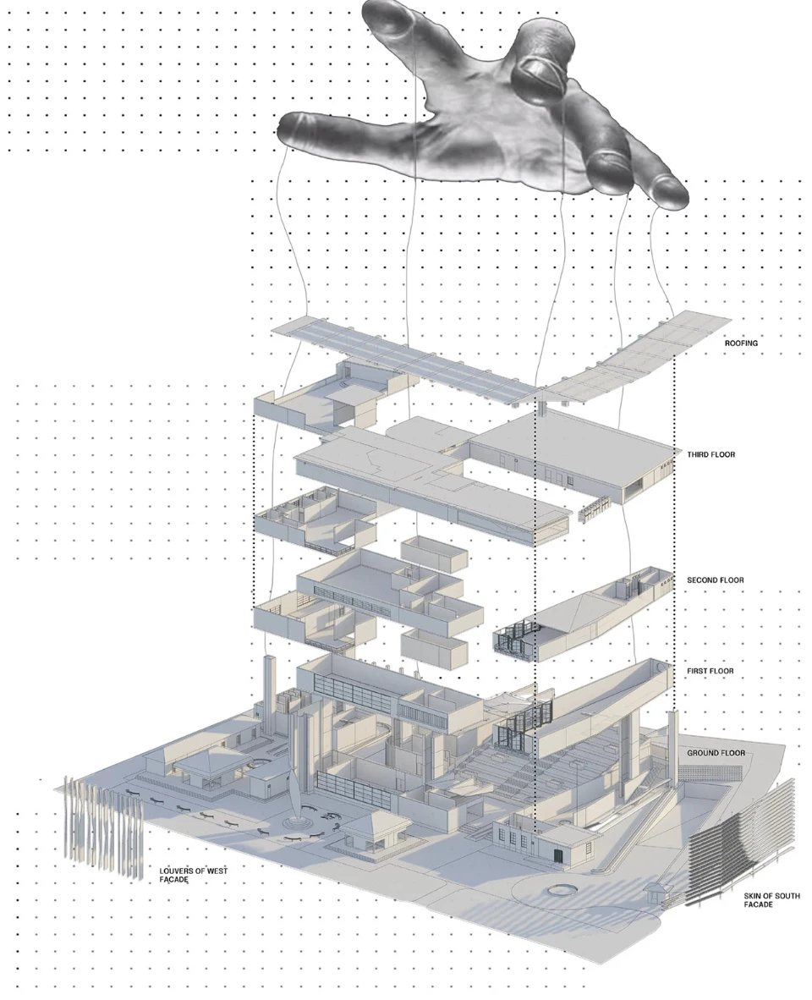

01
Where I started
Five years at architecture school taught me to think in plans, sections and people moving through space. I designed a tiny library in Mattur, a port building with a park around it, a campus on a hillside and tiled-roof buildings in Kottayam.
Every project began the same way: understand the people, give the space a structure, then make it feel good to be in.
